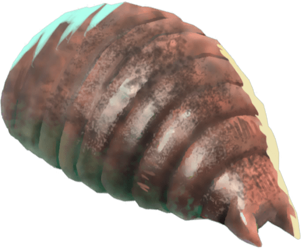
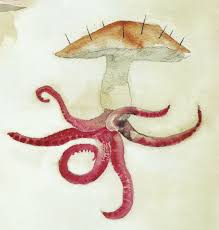
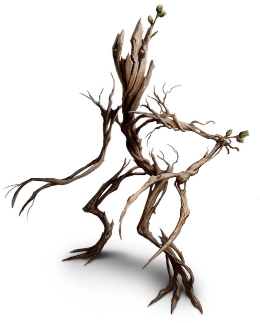
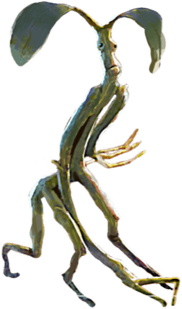
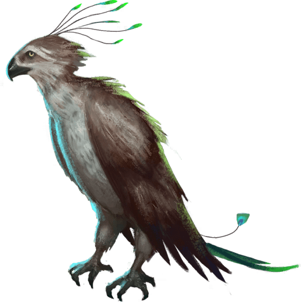

Les classes X sont des animaux classé selon le ministère comme ennuyeux, inoffensif et sont facilement domestiquable.
Le Veracrasse parfois orthographié Véracrasse est un gros ver magique.
| Le Veracrasse | |
|---|---|
|  | |
| Statut | Animal |
| Apparence | Ver épais |
| Peau | Marron |
| Longueur | Jusqu'à 25 cm |
| Localisation | Fossées humides |
| Alimentation | Végétaux |
Ses extrémités sont dépourvus de dents sont impossible à différencier l'une de l'autre, chacune produisant une sécrétion verdâtre qui peut être utilisée pour épaissir les potions.
Le Veracrasse est une créature calme et ennuyante la plupart du temps si on le laisse tranquille. Il est très peu mobile. Il se nourrit de laitue principalement et tout ce qui est végétale de manière générale.
Le mucus de Veracrasse est utilisée comme ingrédient de potions. Elle sort à lier les potions, elle est présente dans les potions de Wiggenweld,philtre de Mort Vivante et de l'Herbicide.
Les classes XX sont des animaux classé comme
Le Horglup, également appelé Horklump, est une créature étrange, en forme de champignon. Originaire de Scandinavie, il peuple les régions du nord de l'Europe.
| Le Horglup | |
|---|---|
|  | |
| Statut | Animal |
| Apparence |
|
| Plumes/Poils | Quelques poils durs et noirs |
| Pays d'origine | Scandinavie |
| Localisation | Europe du Nord |
| Alimentation | Vers de terre |
| Remarques | Grande vitesse de reproduction |
Le Horglup, également appelé Horklump, est une créature étrange, en forme de champignon.
On le reconnaît à sa couleur rose et son apparence, semblable à un champignon charnu, hérissé de poils durs et noirs. Ses tentacules musculeux lui servent de racines et lui permettent de fouiller le sol à la recherche de nourriture.
Les sorciers jardinier qualifie le Horglups de nuisible, il est reconnu pour ses capacités de reproduction prolifique.
Le jus de Horglup est une substance extraite du Horglup.Il est utilisé comme ingrédient de potions et entre notamment dans la composition de nombreuse potions curatives et de l'Herbicide.
Les classes XX sont des animaux classé comme
| Le Botruc | ||
|---|---|---|
|  | ||
| Statut | Animal | |
| Apparence | Ecorce et brindille | |
| Caractères |
|
|
| Yeux | Marrons | |
| Peau |
|
|
| Grandeur | Vingt centimètre maximum | |
| Localisation |
|
|
| Alimentation | Cloportes | |
| Utilisation | Ouvrir les serrures | |
Le Botruc, également appelé Bowtruckle ou Arboresprit, est une petite créature considérée comme un gardien des arbres. Le Botruc sert aussi à déverrouiller une porte fermée.
Le Botruc est une petite créature pouvant mesurer jusqu'à vingt centimètres de hauteur.
Son corps semble être un mélange d'écorces et de brindilles dont la couleur peut varier entre le marron, le vert et le blanchâtre.
Ses doigts sont particulièrement longs et pointus.
Cette apparence lui permet de se cacher et de se confondre très efficacement dans les arbres dans lesquels il niche.
Il peut arriver que la tête du Botruc soit également agrémentée de petites feuilles.
De nature paisible et timide, le Botruc est un animal qui ne deviendra agressif que si l'arbre dans lequel il vit et qu'il protège est menacé.
Dans ce genre de situation, il n'hésitera pas à sauter sur le bûcheron ou le forestier désirant s'attaquer à son arbre pour lui crever les yeux avec ses longs doigts pointus.
Toutefois, faire une offrande de cloportes à un Botruc peut le détourner de son arbre suffisamment longtemps pour qu'un fabricant de baguettes puisse en couper une petite branche.
Couper un arbre dont un Botruc prenait soin entraînera sa colère et sa vengeance.
Les Botrucs peuvent principalement être trouvés dans l'ouest de l'Angleterre, dans le sud de l'Allemagne ainsi que dans certaines forêts scandinaves.
Des Botrucs vivent également dans la Forêt interdite de Poudlard.
Le plus souvent, les Botrucs nichent dans les arbres dont le bois est utilisé dans la création de baguettes magiques.
| Augurey | |
|---|---|
|  | |
| Statut | Animal |
| Apparence |
|
| Caractères | Timide |
| Plumes/Poils | Plumes vert foncé, presque noires |
| Localisation | Grande-Bretagne |
| Irlande | |
| Alimentation |
|
L'Augurey, également appelé phénix irlandais est un oiseau inoffensif, connu pour sa grande timidité. Il traîne cependant une très mauvaise réputation; les sorciers l'associant souvent - à tort - à la mort.
Il ressemble en effet à un vautour anorexique, au plumage vert foncé - tirant sur le noir - parfois infesté par de petits parasites appelés Ciseburines. Son cri mélodique et déprimant est tout aussi caractéristique. Semblable à une lamentation, il était jadis considéré comme un présage funeste.
L'animal passe la majeure partie de sa vie caché dans son nid, en forme de larme, qu'il construit secrètement dans les ronces ou les buissons épineux. Il n'en sort qu'à de très rares occasions. On sait dorénavant que l'Augurey chante lorsque la pluie arrive, et non pour annoncer un présage funeste. Les sorciers amateurs de prévisions météorologique l'utilisent des fois pour prévoir la météo.
Les plumes d'Augurey ne sont d'aucune utilité pour écrire elles repoussent l'encre.